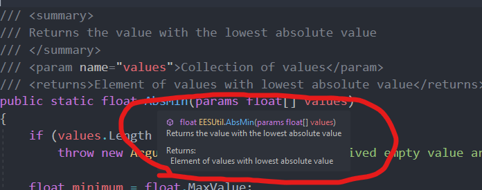

C# Coding Tricks
By: Jake Rogers
Created: September 4th, 2023
Overview
This guide serves as an introduction to a plethora of coding features for the C# programming language as it pertains to video game scripting. This is made as a useful primer for those familiar with other statically typed languages, but are newer to C# (or just happened to miss learning some of these techniques).
Note that inclusion here doesn't indicate "Best Practice", it's just nice to know as an option or when reading code produced by others.
Tip
You can right-click on Table of Contents entires and Copy Link Address to get a link directly to a particular entry on this page!
Short-hands & Convenience Features
Expression Bodies
Expression bodies are a convenient way to write brief one liners within a class:
Note that there was no need to specify return on a non-void expression bodied function: It is assumed that the one-liner will return the result of the instruction.
Lambda Expressions
Some functions may themselves call for a reference to a different function within their parameter list. Lambda Expressions, written similarly to Expression Bodies, can create Anonymous Functions as an argument rather than having to write down the function separately:
This is very useful when dealing with higher-level design strategies which allow functions to be passed in to configure the behavior of a construct, such as Object Pools and State Machines.
Format Strings
string.Format
string.Format allows you to emplace placeholders into a string for cleaner and more modular string formatting:
Interpolated Strings
Interpolated Strings (known as format strings in other languages) are a less versatile but very convenient way of formatting a string.
Invoke them by putting $ in front of a string literal and using {...} to emplace variables. Expressions also work.
"a = " + a + ", b = " + b;).
Constructor Reuse
When writing multiple constructors for the same class, it can be useful to reuse the implementation of another constructor when writing a larger one:
Properties
Properties can be described as more advanced data accessors for a class. They provide cleaner ways to implement things such as Getters & Setters and shorthand accessors.
Getter / Setters
The Getter / Setter pattern can be written fairly easily via properties. The below example allows the private healthPercentage to be accessed publicly, and written to with some error checking:
The above could also be written like so using expression bodies:
Write Restricted Public Member
Properties can also be used to create regular public members that have restricted set access:
Note that this differs from a readonly member, as readonly members cannot be reassigned by any scope once the class' constructor exits.
Derived Properties
Properties can also allow the results of functions to be returned in a way similar to member fields. This is useful for creating derived or composite fields which are accessed in ways similar to a public member:
Functional Features
Parameter Modifiers
Here are a few things you can do with parameters to functions you write:
Pass By Reference (ref) Modifier
Similar to other languages, objects passed as ref are passed as a direct reference to the object given as a parameter rather than a copy. This means changes to said ref parameter in the function will directly change the original variable rather than a copy.
refrequires that the parameter be initialized before it can be passed into the function.- Calling function must use the
refkeyword when providing therefargument. - Read more on Pass By Reference.
out modifier
out works similarly to Pass by Reference, with two major differences:
- The
outparameter no longer needs to be initialized prior to usage in the function call. In fact, it doesn't even need to exist, as the compiler will declare the variable for you if it doesn't exist. - A function with
outparameters must ensure that alloutparameter get initialized at the end of all code paths.
This is a nice way to implement functions which like to return more than one value (Assuming you don't want to use a tuple).
params Modifier
params: Parameter arrays allow callers of the method to provide an any-sized list of parameters, which will then be received as an array.
- Parameter arrays must be the final parameter in the signature, as there is no delimiter to stop adding elements to the array.
- The caller can also pass in an array as well, as long as it matches the type of the parameter array.
- An empty array is also valid.
Named and Optional Parameters
Optional Parameters allow parameters to be ignored or provided by the calling function. If ignored, they will use a default value.
- Optionals must be defined at the end of the parameter list in a block, as required (AKA 'normal') parameters need to be referenced positionally.
- The calling function specifies which optionals to provide by referencing their name.
- This can be useful for code readability, as it strongly associates the parameter with it's purpose in the function.
- You can mix named parameters with positional parameters as long as the overall positioning of all parameters isn't violated. However, it is usually best to either use all named arguments in a function call, or none at all.
XML Documentation
XML Documentation is a .NET standard for in-file C# documentation. Following the standard allows your code to be automatically attributed with documentation by various doc parsers.
For example, using XML doc on a function allows the details of the function to be provided in compatible IDE tooltips.
Visual Studio's IntelliSense will generate the following tooltip when AbsMin is invoked or hovered over:

When writing a function with param tags, each respective param doc will show up as it is being provided in the function call.
It is best to read the relevant .NET doc page for more details. Some IDEs (such as Visual Studio) will automatically generate a skeleton for the docs when you write /// above a function or class definition.
Tuples
C# can enclose multiple variables into a Tuple. This is especially useful for returning multiple pieces of related data from a function:
var keyword works similarly to auto in C, the data type is assumed from the right-hand side of the assignment.
LINQ
Language Integrated Queries (LINQ), in short, allow you to run SQL-style commands on enumerable collections, such as Lists, arrays, etc. This allows you to interact with object collections in a way similar to a database.
While this is typically overkill on many standard collection operations, it can be useful for smart manipulation or extraction of data from very large collections. Video games often have an internal database of object definitions (Items, Weapons, characters, stats, etc) which can leverage LINQ.
Here is an example taken from Microsoft's .NET Documentation Site1:
It is worth noting that the creation of a query expression (line 7 of the example above) does not execute the query. It creates a construct whose execution is then deferred to a later step (the foreach in the above example)
Including the LINQ library into your file also grants you access to some useful collection operations, such as FirstOrDefault, Count, Distinct, Max, OrderBy, Select, and much more.
FirstOrDefault is particularly useful, as it allows you to get the first item out of a collection while specifying a fallback (the default) if the collection is empty.
It is best to take some time to read over the following MS .NET Doc pages to learn more:
- LINQ Overview: An overview of what LINQ is.
- Introduction to LINQ Queries: A practical look into how LINQ is used.
- System.LINQ.Enumerable Methods: Additional collection methods provided by including the LINQ library.